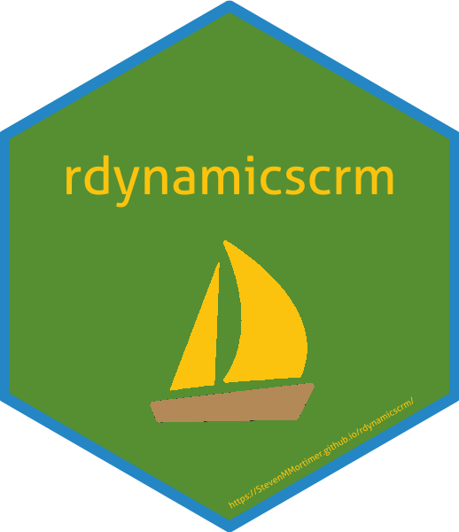

rdynamicscrm is an R package that creates a client to connect to MS Dynamics CRM. Package features include:
- An auto-refreshing authentication method (
dyn_auth()) - CRUD (Create, Retrieve, Update, Delete) methods for records, such as:
-
dyn_create(),dyn_retreive(),dyn_update(),dyn_delete()
-
- Query records using
dyn_query() - Basic utility calls (
dyn_whoami())
Installation
# this package is not yet available on CRAN
# install the latest version available on GitHub using the devtools package
# install.packages("devtools")
devtools::install_github("StevenMMortimer/rdynamicscrm")If you encounter a clear bug, please file a minimal reproducible example on GitHub.
Usage
Authenticate
First, load the rdynamicscrm package and authenticate.
suppressWarnings(suppressMessages(library(dplyr)))
suppressWarnings(suppressMessages(library(purrr)))
library(rdynamicscrm)
dyn_auth(url = "https://test.ztcrm.org/",
username = "test@live.com",
password = "{PASSWORD_HERE}")The dyn_auth() function will obtain a cipher and secret key that will be embedded in the header of each SOAP API call to securely access the CRM instance. After obtaining these authentication credentials, you can check your connectivity by looking at the information returned about the current user. It should be information about you!
# pull down information of person logged in
# it's a simple easy call to get started
# and confirm a connection to the APIs
user_info <- dyn_whoami()
sprintf("Name: %s %s", user_info$firstname, user_info$lastname)
sprintf("User Active?: %s", user_info$isactive)Create
MS Dynamics CRM has entities and those entities contain records. One default entity is the “Account” entity. This example shows how to create two records in the Account entity.
n <- 2
new_accounts <- tibble(FirstName = rep("Test", n),
LastName = paste0("Account-Create-", 1:n))
created_records <- dyn_create(new_accounts, entity_name="Account")
created_recordsQuery
MS Dynamics CRM has proprietary form of SQL called FetchXML. FetchXML is a powerful tool that allows you to return the attributes of records on almost any entity in MS Dynamics CRM including Accounts, Contacts, custom entities and more! Below is an example where we grab the two Account records we just created.
queried_records <- dyn_query(entity - "account")
queried_records
# example using raw FetchXML
queried_records <- dyn_query(fetchxml = my_fetchxml)
queried_recordsUpdate
After creating records you can update them using dyn_update(). Updating a record requires you to pass the MS Dynamics CRM Id of the record. MS Dynamics CRM creates a GUID (globally unique identifier) on each record and uses that to know which record to attach the update information you provide. Simply include a field or column in your update dataset called “Id” and the information will be matched. Here is an example where we update each of the records we created earlier with a new first name called “TestTest”.
Future
Support for:
- Online environments (not just On-Premise IFD environments)
- Upsert
- Related Entities
Credits
This application has derived inspiration from other open source software components. The format of the XML in SOAP calls was created by following mimicking implementations in Java by Jason Lattimer and Python by Veelo, Inc. In addition, inspiration was drawn from examples created by Jamie Miley that are available on his blog. We acknowledge and are grateful to these developers for their contributions to open source.
More Information
Microsoft provides support with a C# client library. Unfortunately R is not a supported language. However, most all operations supported by Dynamics CRM can be made available via this package. This package makes requests best formatted to match what the API requires as input. This articulation is not perfect and continued progress will be made to add and improve functionality. For details on formatting, attributes, and methods please refer to Microsoft’s documentation as they are explained better there.